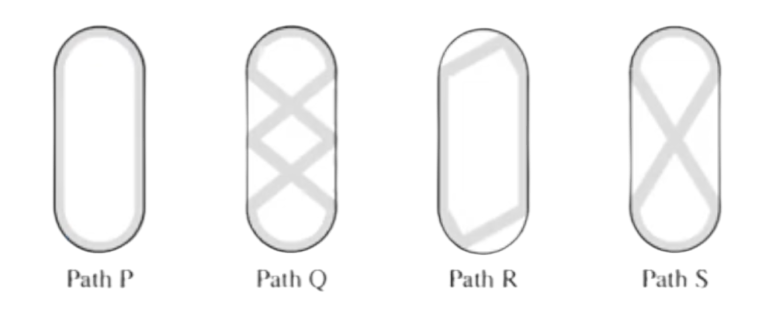
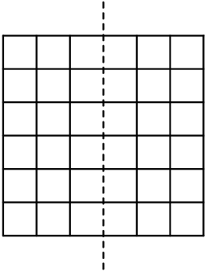

Queston 7
A $3 \times 7$ rectangle is covered without overlap by 3 shapes of tiles: $2 \times 2$, $1\times4$, and $1\times1$, shown below. What is the minimum possible number of $1\times1$ tiles used?

What is the unit digit of:\[222{,}222-22{,}222-2{,}222-222-22-2?\]
We can rewrite the expression as $222,222-(22,222+2,222+222+22+2)$. We note that the units digit of $22,222+2,222+222+22+2$ is $0$ because all the units digits of the five numbers are $2$ and $5\cdot2=10$, which has a units digit of $0$. Now, we have something with a units digit of $0$ subtracted from $222,222$, and so the units digit of this expression is $\boxed{\textbf{(B) } 2}$.
\[222,222-22,222 = 200,000\]\[200,000 - 2,222 = 197778\]\[197778 - 222 = 197556\]\[197556 - 22 = 197534\]\[197534 - 2 = 197532\]So our answer is $\boxed{\textbf{(B) } 2}$. (Note that brute forcing takes lots of time and the AMC8 is a timed test)
We only care about the units digits. Thus, $2-2$ ends in $0$, $0-2$ after regrouping(10-2) ends in $8$, $8-2$ ends in $6$, $6-2$ ends in $4$, and $4-2$ ends in $\boxed{\textbf{(B) } 2}$.
We just take the units digit of each and subtract, adding an extra ten to the first number so we don't get a negative number:\[(12-2)-(2+2+2+2)=10-8=\boxed{\textbf{(B) } 2}\]
\[222{,}222-22{,}222-2{,}222-222-22-2\equiv2-2-2-2-2\equiv-8\equiv\boxed{\textbf{(B) } 2}\pmod{10}\]
We can ignore the other digits and just do $22-2-2-2-2-2$. Because you are subtracting five $2s$ and $2\cdot5 = 10$, you subtract $10$ from $22$. This gives us 12, so the last digit is $\boxed{\textbf{(B) } 2}$.
What is the value of this expression in decimal form?\[\frac{44}{11} + \frac{110}{44} + \frac{44}{1100}\]
We see that $\frac{44}{11}$ is $4$; $\frac{110}{44}$ simplifies to
$\frac{5}{2}$, which is $2.5$;
and $\frac{44}{1100}$ simplifies to $\frac{1}{25}$, which is $0.04$;
$4+2.5+0.04$ reveals\[\frac{44}{11} + \frac{110}{44} +
\frac{44}{1100}\]is $\boxed{\text{(C) 6.54}}$.
Four squares of side length $4, 7, 9,$ and $10$ are arranged in increasing size order so that their left edges and bottom edges align. The squares alternate in color white-gray-white-gray, respectively, as shown in the figure. What is the area of the visible gray region in square units?
We work inwards. The area of the outer shaded square is the area of the
whole square minus the area of the second largest square. The area of
the inner shaded region is the area of the third largest square minus
the area of the smallest square. The sum of these areas is
\[10^2 -
9^2 + 7^2 - 4^2 = 100 - 81 + 49 - 16 = 19 + 33 = \boxed{\textbf{(E)}\
52}\]
This problem appears multiple times in various math competitions
including the AMC and MATHCOUNTS.
In solution 1, we can use Difference of squares to get the answer,
rather than calculating the squares of the numbers:
\[10^2 - 9^2 +
7^2 - 4^2 = (10 - 9)(10 + 9) - (7 - 4)(7 + 4) = 1\cdot19 + 3\cdot11 = 19
+ 33 = \boxed{\textbf{(E)}\ 52}\]
Solve for the areas for each square inside the larger one , and then
subtract the areas of the white regions from the areas of each
square:
\[(10^2 + 7^2) - (9^2 + 4^2) = 149 - 97 =
\boxed{\textbf{(E)}\ 52}\]
We can calculate it as the sum of the areas of $2$ smaller trapezoids
and $2$ larger trapezoids.
\[2\left(\cfrac{(7+4)(7-4)}{2}\right)+2\left(\cfrac{(10+9)(10-9)}{2}\right)=10^2
- 9^2 + 7^2 - 4^2 = 19 + 33 = \boxed{\textbf{(E)}\ 52}\]
Lucius is counting backward by $7$s. His first three numbers are $100$, $93$, and $86$. What is his $10$th number?
Adding numbers 1 through 9 gives us 45. This was her expected sum, but what she got was a perfect square. Since she got that perfect square sum by forgetting a number, that sum is less than 45. The square number right under 45 is 36. So 45 - 36 = 9. So the solution is E[9].
Aaliyah rolls two standard 6-sided dice. She notices that the product of the two numbers rolled is a multiple of $6$. Which of the following integers cannot be the sum of the two numbers?
First, figure out all pairs of numbers whose product is 6. Then, using
the process of elimination, we can find the following:
$\textbf{(A)}$ is possible: $2\times 3$
$\textbf{(C)}$ is possible: $1\times 6$
$\textbf{(D)}$ is possible: $2\times 6$
The only integer that cannot be the sum is $\boxed{\textbf{(B) } 6}$.
First, see that in order for the two numbers to have a product of 6, it
must either have 6 as a factor or have factors that have a product of 6
(Notably $2\times 3$).
When we look at the answer choices, we see that answers $C, D, E$ all
are more than 6, so they can all be added as a sum of 6. Answer $A$
works because $2+3=5$, so 6 is the only answer choice that doesn't work.
Thus, the answer is $\boxed{\textbf{(B) } 6}$.
Sergai skated around an ice rink, gliding along different paths. The gray lines in the figures below show four of the paths labeled P, Q, R, and S. What is the sorted order of the four paths from shortest to longest?
You can measure the lengths of the paths until you find a couple of guaranteed true inferred statements as such: $Q$ is greater than $S$, $P$ is greater than $R$, and $R$ and $P$ are the smallest two, therefore the order is $R, P, S, Q.$ Thus we get the answer $\boxed{\textbf{(D)}~R, P, S, Q}$.
Obviously Path Q is the longest path, followed by Path S.
So, it is down to Paths P and R.
Notice that curved lines are always longer than the straight ones that
meet their endpoints, therefore Path P is longer than Path R.
Thus, the order from shortest to longest is $\boxed{\textbf{(D) }
\text{R, P, S, Q}}$.
We can compare paths that look similar, $P$ with $R$ and $Q$ with
$S$.
$R$ is shorter than $P$ because it replaces curved lines in $P$ with
straight lines, and straight lines are always the shortest distance
between two points.
The two straight lines in $S$ can be seen as paths going diagonally
straight across the rink, and the straight lines in $Q$ can be seen as
initially going diagonally across the rink, before taking a short detour
and then finishing its path. Since a straight line between two points is
shorter than zig-zagging lines, path $S$ is shorter than path $Q$.
The only difference between path $P$ and path $S$ is the straight lines,
with $P$ going up and down while $S$ goes diagonally. A right triangle
can be drawn from a line from $P$ and a line from $S$. We can see that
the straight lines in $P$ act as the leg of the right triangle while the
hypotenuse is the straight lines from $S$. The legs of a right triangle
are always less than the hypotenuse, so $P$ is shorter than $S$.
Putting together these inequality statements, the answer is
$\boxed{\textbf{(D)}~R, P, S, Q}$.
A $3 \times 7$ rectangle is covered without overlap by 3 shapes of tiles: $2 \times 2$, $1\times4$, and $1\times1$, shown below. What is the minimum possible number of $1\times1$ tiles used?
We can eliminate B, C, and D, because they are not $21$ subtracted by any multiple of $4$. Finally, we see that there is no way to have A, so the solution is $\boxed{\textbf{(E)\ 5}}$.
Let $x$ be the number of $1$ by $1$ tiles. There are $21$ squares and each $2$ by $2$ or $1$ by $4$ tile takes up 4 squares, so $x \equiv 1 \pmod{4}$, so it is either $1$ or $5$. Color the columns, starting with red, then blue, and alternating colors, ending with a red column. There are $12$ red squares and $9$ blue squares, but each $2$ by $2$ and $1$ by $4$ shape takes up an equal number of blue and red squares, so there must be $3$ more $1$ by $1$ tiles on red squares than on blue squares, which is impossible if there is just one, so the answer is $\boxed{\textbf{(E)\ 5}}$, which can easily be confirmed to work.
Suppose there are $a$ different $2\times 2$ tiles, $b$ different
$4\times 1$ tiles and $c$ different $1\times 1$ tiles. Since the areas
of these tiles must total up to $21$ (area of the whole grid), we
have
\[4a + 4b + c = 21.\]
Reducing modulo $4$ gives $c\equiv
1\pmod{4}$, or $c = 1$ or $c = 5$.
If $c = 1$, then $a + b = 5$. After some testing, there is no valid pair
$(a, b)$ that works, so the answer must be $\boxed{\textbf{(E)\ 5}}$,
which can be constructed in many ways.
On Monday, Taye has $$2$. Every day, he either gains $$3$ or doubles the amount of money he had on the previous day. How many different dollar amounts could Taye have on Thursday, $3$ days later?

How many dollar values could be on the first day? Only $2$ dollars. The
second day, you can either add $3$ dollars, or double, so you can have
$5$ dollars, or $4$. For each of these values, you have $2$ values for
each. For $5$ dollars, you have $10$ dollars or $8$, and for $4$
dollars, you have $8$ dollars or $7$ dollars. Now, you have $2$ values
for each of these. For $10$ dollars, you have $13$ dollars or $20$, for
$8$ dollars, you have $16$ dollars or $11$, for $8$ dollars, you have
$16$ dollars or $11$, and for $7$ dollars, you have $14$ dollars or
$10$.
On the final day, there are 11, 11, 16, and 16 repeating, leaving you
with $8-2 = \boxed{\textbf{(D)\ 6}}$ different values.
Continue as in Solution 1 to get $7$, $8$, or $10$ dollars by the 2nd day. The only way to get the same dollar amount occurring twice by branching (multiply by $2$ or adding $3$) from here is if $7+3=10\cdot 2$ or $7+3=8\cdot 2$ which both aren't true. Hence our answer is $3\cdot2=\boxed{\textbf{(D)\ 6}}$.
Let $a$ represent Taye adding $3$ dollars and $d$ represent Taye doubling his money. We can list out all the possibilities: $a$ => $a$ => $a$ = $11$, $a$ => $a$ => $d$ = $16$, $a$ => $d$ => $a$ = $12$, $a$ => $d$ => $d$ = $20$, $d$ => $a$ => $a$ = $10$, $d$ => $a$ => $d$ = $14$, $d$ => $d$ => $a$ = $11$, $d$ => $d$ => $d$ = $16$. The unique values are $10,11,12,14,16,20$. Thus, our desired answer is $\boxed{\textbf{(D)\ 6}}$
All the marbles in Maria's collection are red, green, or blue. Maria has half as many red marbles as green marbles, and twice as many blue marbles as green marbles. Which of the following could be the total number of marbles in Maria's collection?
Since she has half as many red marbles as green, we can call the number of red marbles $x$, and the number of green marbles $2x$. Since she has half as many green marbles as blue, we can call the number of blue marbles $4x$. Adding them up, we have: $7x$ marbles. The number of marbles therefore must be a multiple of $7$, as $x$ represents an integer, so the only possible answer is $\boxed{\textbf{(E) 28}}.$
Suppose Maria has $g$ green marbles and $t$ total marbles. She then has
$\frac{g}{2}$ red marbles and $2g$ blue marbles. Altogether, Maria
has
\[g + \frac{g}{2} + 2g = \frac{7g}{2} = t\]
marbles, so $g
= \dfrac{2t}{7},$ so $t$ must be a multiple of $7$. The only multiple of
$7$ in the answer choices is $\boxed{\textbf{(E) 28}}.$
This solution is similar to Solution 1. The most simplest and effective
way to solve this problem is equations. We have the following
equations:
2r=g and 2g=b We essentialy want to find out the total number of mables
in Maria's collection or in equation terms (r+g+b). Converting that
equation and substituting the values we get r+2r+4r=7r Now, we know the
total is a multiple of 7 leaving our answer as $\boxed{\textbf{(E)
28}}.$
In January $1980$ the Mauna Loa Observatory recorded carbon dioxide $(CO2)$ levels of $338$ ppm (parts per million). Over the years the average $CO2$ reading has increased by about $1.515$ ppm each year. What is the expected $CO2$ level in ppm in January $2030$? Round your answer to the nearest integer.
This is a time period of $2030 - 1980 = 50$ years, so we can expect the ppm to increase by $50*1.515=75.75\approx 76$ ppm. Since we started with $338$ ppm, we have $76+338=\boxed{\textbf{(B)\ 414}}$.
$2030 - 1980 = 50$ years. The ppm level in 2030 is $338 + 50 * 1.515 = 338 + 75.75 = 413.75$ $\approx \boxed{\textbf{(B)\ 414}}$.
The coordinates of $\triangle ABC$ are $A(5,7)$, $B(11,7)$, and $C(3,y)$, with $y>7$. The area of $\triangle ABC$ is 12. What is the value of $y$?

Since the triangle has a base of $6$, we can plug in that value as the
base. Then, we can solve the equation for the height. Doing so gives
us,
\[\dfrac{6h}{2}=3h=12.\]
This means that $h=4$, so that
means that we have to add 4 to the $y$-coordinate. So the answer is
$7+4=\boxed{(D) 11}$
By the Shoelace Theorem, $\triangle ABC$ has area\[\frac{1}{2}|(y \cdot
11 + 7 \cdot 5 + 7 \cdot 3) - (3 \cdot 7 + 11 \cdot 7 + 5 \cdot y)| =
\frac{1}{2}|(11y + 56) - (98 + 5y)| = \frac{1}{2}|6y - 42|.\]From the
problem, this is equal to $12$. We now solve for y.
$\frac{1}{2}|6y - 42| = 12$
$|6y-42| = 24$
$6y - 42 = 24$ OR $6y - 42 = -24$
$6y = 66$ OR $6y = 18$
$y = 11$ OR $y = 3$
However, since, as stated in the problem, $y > 7$, our only valid
solution is $\boxed{\textbf{(D)} 11}$.
As in the figure, the triangle is determined by the vectors $\begin{bmatrix}-2 \\ y-7\end{bmatrix}$ and $\begin{bmatrix}6\\0\end{bmatrix}$. Recall that the absolute value of the determinant of these vectors is the area of the parallelogram determined by those vectors; the triangle has half the area of that parallelogram. Then we must have that $\frac{1}{2}|\begin{vmatrix}-2 & y-7\\6 & 0\end{vmatrix}| = 12 \implies \begin{vmatrix}-2 & y-7\\6 & 0\end{vmatrix} = \pm 24$. Expanding the determinants, we find that $-6(y-7) = 24$ or $-6(y-7) = -24$. Solving each equation individually, we find that $y = 3$ or $y = 11$. However, the problem states that $y > 7$, so the only valid solution is $\boxed{\textbf{(D)} 11}$.
Draw a rectangle so that the hypotenuse is the diagonal of the
rectangle. The base is 8 and the height is , so the area is ${8(y - 7) =
8y - 56}$
Inside the rectangle, there are 2 extra right triangles along with the
original triangle. The larger right triangle has an area of half the
rectangle, so it has an area of
${\frac{8y - 56}{2} = 4y - 28}$
The smaller right triangle has a base of 2 and a height of
, so its area is ${\frac{2(y - 7)}{2} = y - 7}$
Subtracting the extra right triangles from the area of the rectangle,
you get
${(8y - 56) - (4y - 28) - (y - 7) = 3y - 21}$
Since the problem told us that the original triangle had an area of 12,
you get the equation
${3y - 21 = 12}$
${3y = 33}$
${y = 11}$
So the answer to the problem is \boxed{\textbf{D}} .
Rohan keeps 90 guppies in 4 fish tanks.
How many guppies are in the 4th tank?
Let $x$ denote the number of guppies in the first tank.
Then, we have the following for the number of guppies in the rest of the
tanks:
The number of guppies in all of the tanks combined is 90, so we can
write the equation
\[(x)+(x+1)+(x+1+2)+(x+1+2+3) = 90.\]
Simplifying the equation gives
\[4x + 10 = 90.\]
Solving the resulting equation gives $x = 20$, so the number of guppies
in the fourth tank is $20+1+2+3 = \boxed{\textbf{(E)}\ 26}$.
Suppose there are no guppies in the first tank. Then, the number of guppies in the other tanks are $1,3,$ and $6,$ or $10$ guppies in total. We need to add $90-10 = 80$ guppies into $4$ tanks or $20$ guppies in each tank, so the number of guppies in the fourth tank is $20+6 = \boxed{\textbf{(E)}\ 26}.$
Each of the even numbers $2, 4, 6, \ldots, 50$ is divided by $7$. The remainders are recorded. Which histogram displays the number of times each remainder occurs?
Let's take the numbers 2 through 14 (evens). The remainders will be 2, 4, 6, 1, 3, 5, and 0. This sequence keeps repeating itself over and over. We can take $\left\lfloor\frac{50}{14}\right\rfloor$, so after the number 42, every remainder has been achieved 3 times. However, since 44, 46, 48, and 50 are left, the remainders of those will be 2, 4, 6, and 1 respectively. The only histogram in which those 4 numbers are set at 4 is histogram $\boxed{\textbf{(A)}}$.
Writing down all the remainders gives us $2, 4, 6, 1, 3, 5, 0, 2, 4, 6, 1, 3, 5, 0, 2, 4, 6, 1, 3, 5, 0, 2, 4, 6, 1.$ In this list, there are $3$ numbers with remainder $0$, $4$ numbers with remainder $1$, $4$ numbers with remainder $2$, $3$ numbers with remainder $3$, $4$ numbers with remainder $4$, $3$ numbers with remainder $5$, and $4$ numbers with remainder $6$. Manually computation of every single term can be avoided by recognizing the pattern alternates from $0, 2, 4, 6$ to $1, 3, 5$ and there are $25$ terms. The only histogram that matches this is $\boxed{\textbf{(A)}}$.
A number $N$ is inserted into the list $2$, $6$, $7$, $7$, $28$. The mean is now twice as great as the median. What is $N$?
The median of the list is $7$, so the mean of the new list will be $7 \cdot 2 = 14$. Since there are $6$ numbers in the new list, the sum of the $6$ numbers will be $14 \cdot 6 = 84$. Therefore, $2+6+7+7+28+N = 84 \implies N = \boxed{\text{(E) 34}}$
Since the average right now is $10$, and the median is $7$, we see that $N$ must be larger than $10$, which means that the median of the 6 resulting numbers should be $7$, making the mean of these $14$. We can do $2 + 6 + 7 + 7 + 28 + N = 14 * 6 = 84$. $50 + N = 84$, so $N$ = $\boxed{\text{(E) 34}}$
We try out every option by inserting each number into the list. After trying out each number, we get $\boxed{\text{(E) 34}}$
Note that this is very time-consuming and it is not the most practical solution.
We could use answer choices to solve this problem. The sum of the $5$ numbers is $50$. If you add $7$ to the list, $57$ is not divisible by $6$, therefore it will not work. Same thing applies to $14$ and $20$. The only possible choices left are $28$ and $34$. Now you check $28$. You see that $28$ doesn't work because $(28+50) \div 6 = 13$ and $13$ is not twice of the median, which is still $7$. Therefore, only choice left is $\boxed{\text{(E) 34}}$
Kei draws a $6$-by-$6$ grid. He colors $13$ of the unit squares silver and the remaining squares gold. Kei then folds the grid in half vertically, forming pairs of overlapping unit squares. Let $m$ and $M$ equal the least and greatest possible number of gold-on-gold pairs, respectively. What is the value of $m+M$?
First, we note that there are $18$ "pairs" of squares folded on top of each other after the folding. The minimum number of gold pairs occurs when silver squares occupy the maximum number of pairs, and the maximum number of gold pairs occurs when silver squares occupy the minimum number of pairs. The latter case occurs when all $13$ silver squares are placed in different pairs, resulting in $18-13=5$ gold pairs. The former case occurs when the silver squares are paired up as much as possible, resulting in $6$ complete pairs and another square occupying another pair slot. Then there are $18-7=11$ gold pairs. Our answer is $11+5=\boxed{\textbf{(C) }16}$.
We can see that the least number of gold-on-gold pairs will be obtained when the $13$ silver squares are placed on the two sides so that they don't overlap when folded over (because then it will minimize the number of gold-on-golds). We can see that if we split them up $6$ and $7$ on both sides, and then fold it, the number of gold-on-golds will be $18-13 = 5$.
The maximum number of gold-on-golds will be achieved when the silver squares overlap when folded over, which will increase the number of gold-on-golds. If we align 6 silver squares with each other on each side, and put the last one somewhere else, we get the maximum is $18 - 7 = 11$. Therefore, the answer is $11+5=\boxed{\textbf{(C)}~16}$.
Five distinct integers from $1$ to $10$ are chosen, and five distinct integers from $11$ to $20$ are chosen. No two numbers differ by exactly $10$. What is the sum of the ten chosen numbers?
Note that for no two numbers to differ by $10$, every number chosen must have a different units digit. To make computations easier, we can choose $(1, 2, 3, 4, 5)$ from the first group and $(16, 17, 18, 19, 20)$ from the second group. Then the sum evaluates to $1+2+3+4+5+16+17+18+19+20 = \boxed{\text{(C)\ 105}}$.
For $1+2+3+4+5+16+17+18+19+20$, we can add the first term and the last term, which is $21$. If we add the second term and the second-to-last term it is also $21$. There are $5$ pairs that sum to $21$, so the answer is $21 \times 5$ which equals $\boxed{\text{(C)\ 105}}$.
One efficient method is to quickly add $(1, 2, 3, 4, 5, 6, 7, 8, 9, 10)$, which is $55$. Then because you took $50$ in total away from $(16, 17, 18, 19, 20)$, you add $50$. $55+50= \boxed{\text{(C)\ 105}}$.
To solve this problem, I started with the easiest/smallest case
possible. In my opinion, that was
$1+2+3+4+5+16+17+18+19+20$.
I then solved this equation quickly using Little Gauss's method,
rearranging that into
$1+19+2+18+3+17+4+16+5+20$.
I simplified this into
$20+20+20+20+25$.
Solving this simple equation gives us the answer, which is
$\boxed{\text{(C)\ 105}}$.
In the land of Markovia, there are three cities: $A$, $B$, and $C$. There are 100 people who live in $A$, 120 who live in $B$, and 160 who live in $C$. Everyone works in one of the three cities, and a person may work in the same city where they live. In the figure below, an arrow pointing from one city to another is labeled with the fraction of people living in the first city who work in the second city. (For example, $\frac{1}{4}$ of the people who live in $A$ work in $B$.) How many people work in $A$?

There are $100 \cdot (\frac{1}{4} + \frac{1}{5}) = 100 \cdot \frac{9}{20} = 45$ people who do not work in city $A$ that live in city $A$, meaning that $100 - 45 = 55$ people who live in city $A$ work in city $A$. There are $\frac{1}{3} \cdot 120 = 40$ people who live in city $B$ and work in $A$, as well as $\frac{1}{8} \cdot 160 = 20$ people who live in city $C$ that work in city $A$. Therefore, the answer is $55 + 40 + 20 = \boxed{\textbf{(D)}\ 115}$.
We could also make an equation. Let's denote the number of people that
live in city $A$ as $a$, $B$ as $b$, and $C$ as $c$. If $x$ denotes the
number of people working in city $A$, then $x = \frac{1}{8}c +
\frac{1}{3}b + a - \frac{1}{4}a - \frac{1}{5}a$. This is because
$\frac{1}{8}$ of the people from City $C$ and $\frac{1}{3}$ of the
people from City $B$ work in city $A$ as shown in the image. We also
know that $\frac{9}{20}$ of the people living in $A$ work in other
cities. We are already given the values of variables $a$, $b$, and $c$
as $100$, $120$, and $160$ respectively. Plug the values it into the
main equation like this:
$x = 160 \cdot \frac{1}{8} + 120 \cdot \frac{1}{3} + 100 - 100 \cdot
\frac{1}{4} - 100 \cdot \frac{1}{5}$. We solve for it and get our answer
$\boxed{\textbf{(D)}\ 115}$.
The circle shown below on the left has a radius of 1 unit. The region between the circle and the inscribed square is shaded. In the circle shown on the right, one quarter of the region between the circle and the inscribed square is shaded. The shaded regions in the two circles have the same area. What is the radius $R$, in units, of the circle on the right?

The area of the shaded region in the circle on the left is the area of the circle minus the area of the square, or $\big(\pi-2)$. The shaded area in the circle on the right is $\dfrac{1}{4}$ of the area of the circle minus the area of the square, or $\dfrac{\pi R^2-2R^2}{4}$, which can be factored as $\dfrac{R^2(\pi-2)}{4}$. Since the shaded areas are equal to each other, we have $\pi-2=\dfrac{R^2(\pi-2)}{4}$, which simplifies to $R^2=4$. Taking the square root, we have $R=\boxed{\text{(B)\ 2}}$
The side length of the smaller square is $\sqrt{2}$, which follows from
the Pythagorean Theorem since the square is inscribed in a circle of
radius $1$, making the diagonal equal to $2$. Thus, the area of the
square is $(\sqrt{2})^2 = 2$. The circle in which the square is
inscribed has radius $1$, so its area is $\pi \cdot 1^2 = \pi$.
Therefore, the area of the shaded region (the part of the circle not
covered by the square) is $\pi - 2$.
Now, consider the larger square, which is inscribed in a circle of
radius $R$. This square can be divided into four congruent right
triangles by drawing lines from the center of the circle to the vertices
of the square. Each triangle has legs of length $R$ and includes a
$90^\circ$ angle at the center. Using the triangle area formula
$\frac{1}{2}ab\sin(C)$ with $a = b = R$ and $C = 90^\circ$, each
triangle has area $\frac{1}{2}R^2$. Since there are four such triangles,
the area of the square is $4 \cdot \frac{1}{2}R^2 = 2R^2$. The area of
the circle is $\pi R^2$, so the area of the shaded region (the part of
the circle outside the square) is $\frac{1}{4}(\pi R^2 - 2R^2) =
\frac{1}{4}R^2(\pi - 2)$.
We are told that this shaded region also has area equal to $\pi - 2$, so
we set up the equation $\frac{1}{4}R^2(\pi - 2) = \pi - 2$. Assuming
$\pi - 2 \neq 0$, we divide both sides by $\pi - 2$, giving
$\frac{1}{4}R^2 = 1$, which leads to $R^2 = 4$, and finally $R = 2$.
Thus, the answer is $\boxed{\text{(B) } 2}$.
We start with the first area. Since the square is inscribed, its diagonal is $2\implies$ its side length is $\sqrt{2}\implies$ its area is $2$, therefore the first area is $\pi-2$. The second area is $\dfrac{R^2\pi-2R^2}{4}$, found in a similar manner. Writing and solving the equation, we have\[\pi-2=\dfrac{R^2\pi-2R^2}{4}\implies4(\pi-2)=R^2(\pi-2)\implies R=2.\]The answer is $\boxed{\text{(B) }2}$
Since the two figures are similar, and the 4 regions in the first circle are equal in area to one of the four regions in the second circle, the second figure's area is $4$ times the first figure's area. Therefore, the side lengths are multiplied by a factor of $\sqrt{4} = 2$, so the answer is $1 \cdot 2 = \boxed{\textbf{(B)} 2}$.
First find the area of the smaller circle with the known radius. Since
the radius is $1$, the area of the circle is $\pi$, and finding the side
length of the square would equal to $\sqrt{2}$. Squaring that gives us
the area of the square which is $2$, and the shaded area of the first
one is equal to $\pi - 2$. The second area can be shortened to
$\frac{R^2\pi}{4} - \frac{\left(\sqrt{2R^2}\right)^2}{4}$, since we only
need $\frac{1}{4}$th of the sections. We then make them equal, which
makes this equation:
$\pi - 2 = \frac{R^2\pi}{4} - \frac{\left(\sqrt{2R^2}\right)^2}{4}$
Simplifying this equation would be $4\pi - 8 = R^2\pi - 2R^2$. We can
factor out the $R^2$ which makes $4\pi - 8 = R^2\left(\pi - 2\right)$.
Dividing out the $\pi - 2$ would give us $4$ on the left side. $4 = R^2$
which leaves us to choice $\boxed{\text{(B) }2}$.
We are given two circles, each with an inscribed square. In the first
circle, the radius is 1 unit, and the region between the circle and the
inscribed square is shaded. In the second circle, one quarter of the
region between the circle and the inscribed square is shaded. The shaded
areas in both circles are the same. Our goal is to determine the radius
$R$ of the second circle.
Step 1: Set up a ratio for the areas of the shaded regions We know that
the shaded region in the first circle (with radius 1) and the shaded
region in the second circle (with radius $R$) are proportional in terms
of the total area between the circle and the inscribed square. The
shaded area in the second circle is one quarter of the total area
between the circle and the square, while the shaded area in the first
circle is the entire region.
Step 2: Relate the areas to the radius
Lets recall that the area between the circle and the inscribed square
is proportional to the square of the radius of the circle because the
square's side length scales with the radius of the circle.
So, in the first circle with radius 1:\[\text{Area between circle and
square} \propto 1^2 = 1\]and the shaded area is proportional to the
entire area between the circle and the square, i.e., 1.
In the second circle with radius $R$:\[\text{Area between circle and
square} \propto R^2\]and the shaded area is one-quarter of this total
area, so it is proportional to $\frac{1}{4} R^2$.
Step 3: Set up the ratio of shaded areas
We are told that the shaded areas in both circles are the same, so we
set up the following equation:\[1 = \frac{1}{4} R^2\]
Step 4: Solve for $R$
Multiply both sides of the equation by 4:\[4 = R^2\]Taking the square
root of both sides:\[R = 2\]
Thus, the radius of the second circle is $\boxed{\text{(B) 2}}$.
Notice that if you shaded the rest of the region between the square and the circle, then the area would be $4$ times the area of the shaded region in the smaller circle. Since the radius changes by a factor of $k^2$, $k^2 = 4$, solving for gets you $2$. Hence, the answer is $\fbox{\textbf{(B)}\ 2}$
We want to find a quick and easy formula that can be applied to this
(not necessarily a formula, but a rule). We take the area of the circle
and subtract it from the area of the square and you will find the area
of the $4$ outer shaded regions. This rule is basically $\pi
r^2-2r^2=r^2(\pi-2)$. We plug in the radius from the first figure and
compute the answer to be $\pi-2$. Since this represents the area of ONE
region in the second figure, we have to multiply our result by four
which gets us $4\pi-8$ or to make it easier, you can factor the four and
make it $4(\pi-2)$. Using our rule, we can set both equations equal to
each other.
$R^2(\pi-2)=4(\pi-2)$
$R^2=4$
$R=\boxed{\textbf{(B)}2}$
Two towns, $A$ and $B$, are connected by a straight road, $15$ miles long. Traveling from town $A$ to town $B$, the speed limit changes every $5$ miles: from $25$ to $40$ to $20$ miles per hour (mph). Two cars, one at town $A$ and one at town $B$, start moving toward each other at the same time. They drive at exactly the speed limit in each portion of the road. How far from town $A$, in miles, will the two cars meet?

From the answer choices, the cars will meet somewhere along the $40$ mph
stretch. Car $A$ travels $25$mph for $5$ miles, so we can use
dimensional analysis to see that it will be $\frac{1\ \text{hr}}{25\
\text{mi}}\cdot 5\ \text{mi} = \frac{1}{5}$ of an hour for this portion.
Similarly, car $B$ spends $\frac{1}{4}$ of an hour on the $20$ mph
portion.
Suppose that car $A$ travels $x$ miles along the $40$ mph portion-- then
car $B$ travels $5-x$ miles along the $40$ mph portion. By identical
methods, car $A$ travels for $\frac{1}{40}\cdot x = \frac{x}{40}$ hours,
and car $B$ travels for $\frac{5-x}{40}$ hours.
At their meeting point, cars $A$ and $B$ will have traveled for the same
amount of time, so we have\begin{align*} \frac{1}{5} + \frac{x}{40} &=
\frac{1}{4} + \frac{5-x}{40}\\ 8 + x &= 10 + 5-x, \end{align*}so $2x =
7$, and $x = 3.5$ miles. This means that car $A$ will have traveled $5 +
3.5= \boxed{\textbf{(D)\ 8.5}}$ miles.
The first car, moving from town $A$ at $25$ miles per hour, takes $\frac{5}{25} = \frac{1}{5} \text{hours} = 12$ minutes. The second car, traveling another $5$ miles from town $B$, takes $\frac{5}{20} = \frac{1}{4} \text{hours} = 15$ minutes. The first car has traveled for 3 minutes or $\frac{1}{20}$th of an hour at $40$ miles per hour when the second car has traveled 5 miles. The first car has traveled $40 \cdot \frac{1}{20} = 2$ miles from the previous $5$ miles it traveled at $25$ miles per hour. They have $3$ miles left, and they travel at the same speed, so they meet $1.5$ miles through, so they are $5 + 2 + 1.5 = \boxed{\textbf{(D) }8.5}$ miles from town $A$.
Instead of using algebra, we can visualize how far each car has traveled every hour. Let us divide each portion of the road into distances traveled each hour: For the $25$ mph portion, we divide it up into 5 sections, because $\frac{25\ \text{mph}}{5\ \text{mi}} = 5\ \text{hr}$. Similarly, we divide the $40$ mph portion into 8 sections ($\frac{40\ \text{mph}}{5\ \text{mi}} = 8\ \text{hr}$) and the $20$ mph portion into 4 sections ($\frac{20\ \text{mph}}{5\ \text{mi}} = 4\ \text{hr}$). Thus, we have the following diagram.

After four hours, car A has reached the end of the $20$ mph portion, while car B has traveled $\frac{4}{5}$ of the $25$ mph portion. We can plot the amount of distance traveled, with the red dot representing car A and the blue dot representing car B.

If we keep moving the dots, they will eventually meet at segment 3.5 of the $40$ mph portion of the road (note that each segment represents 1 hour of time traveled):

Now, we must account for the $5$ miles in the $25$ mph portion. Since
the two cars meet at segment 3.5 of the $40$ mph portion, we add the $5$
miles traveled in the $25$ mph section:
\[5\ \text{mi} + 3.5\ \text{mi} = \boxed{\textbf{(D) 8.5}}\]miles
Sarika, Dev, and Rajiv are sharing a large block of cheese. They take turns cutting off half of what remains and eating it: first Sarika eats half of the cheese, then Dev eats half of the remaining half, then Rajiv eats half of what remains, then back to Sarika, and so on. They stop when the cheese is too small to see. About what fraction of the original block of cheese does Sarika eat in total?
Let the total amount of cheese be $1$. We will track the amount of
cheese Sarika eats throughout the process.
First Round: Sarika eats half of the total cheese, so she
eats:\[\frac{1}{2}.\]Second Round: Dev eats half of what remains after
Sarika's turn, which is:\[\frac{1}{4}.\]Third Round: Rajiv eats half of
the remaining cheese after Devs turn, which is:\[\frac{1}{8}.\]
At the end of the first round, the total cheese eaten is:\[\frac{1}{2} +
\frac{1}{4} + \frac{1}{8} = \frac{7}{8}.\]
We observe that Sarikas consumption follows a geometric sequence. In
the first round, she eats $\frac{1}{2}$, and in subsequent rounds, she
eats half of what remains from the previous round. This gives the
following series for Sarikas total consumption:
\[\frac{1}{2} + \frac{1}{16} + \frac{1}{128} + \cdots\]
This is a geometric series with first term $\frac{1}{2}$ and common
ratio $\frac{1}{8}$. The sum $S$ of this infinite geometric series is
given by the formula:
\[S = \frac{a}{1 - r},\]where $a$ is the first term and $r$ is the
common ratio. Substituting $a = \frac{1}{2}$ and $r = \frac{1}{8}$:
\[S = \frac{\frac{1}{2}}{1 - \frac{1}{8}} =
\frac{\frac{1}{2}}{\frac{7}{8}} = \frac{1}{2} \times \frac{8}{7} =
\frac{4}{7}.\]
Thus, Sarika eats $\frac{4}{7}$ of the original block of cheese. The
correct answer is:\[\boxed{\textbf{(A) } \frac{4}{7}}.\]
Sarika eats $1/2$ of the original cheese, and then because the others eat $1/4$ and $1/8$, she eats $1/16$ next, and then $1/128$, and then so on. Since the values later are going to be too small to make a huge difference, we can use these $3$ values. She ate $(64 + 8 + 1)/128 = 73/128$. We can replace the $73$ with a $72$ for now, so $72/128 = 9/16$, which simplifies to around $56.25$. Since there is a little bit more of the cheese to be accounted for, the amount that she eats will be around $\boxed{\textbf{(A) }\frac{4}{7}}$.
Her first $2$ bites will be $\frac{1}{2}$ and $\frac{1}{16}$. Everything else won't matter, so the answer will be closest to $\frac{9}{16}$, $\frac{4}{7}$.
The Konigsberg School has assigned grades 1 through 7 to pods $A$ through $G$, one grade per pod. Some of the pods are connected by walkways, as shown in the figure below. The school noticed that each pair of connected pods has been assigned grades differing by 2 or more grade levels. (For example, grades 1 and 2 will not be in pods directly connected by a walkway.) What is the sum of the grade levels assigned to pods $C, E$, and $F$?
The key observation for this solution is to observe that pods $C$ and
$F$ both have degree 5; that is, they are connected to five other pods.
This implies that $C$ and $F$ must contain grades 1 and 7 in either
order (if $C$ or $F$ contained any of grades 2, 3, 4, 5, or 6, then
there would only be four possible grades for five pods, a
contradiction). It does not matter which grade $C$ and $F$ gets (see
Solution 2 below), so we will assume that pod $C$ is assigned grade 1,
and pod $F$ is assigned grade 7.
Next, pod $D$ is the only pod which is not adjacent to pod $F$, so pod
$D$ must be assigned grade 6. Similarly, pod $G$ must be assigned grade
2.
Lastly, we need to assign grades 3, 4, and 5 to pods $A$, $B$, and $E$.
Note that $A$ and $B$ are adjacent; therefore, pods $A$ and $B$ must
contain grades 3 and 5. We conclude that $E$ must be assigned grade 4.
The requested sum is $1+4+7 = \mathbf{(A)\,} 12$.
Suppose that we replaced each label $x$ with $8-x$. That is, we replaced
the grade $a$ assigned to $A$ with the grade $8-a$, the grade $b$
assigned to $B$ with $8-b$, and so on. We claim that if the initial
labeling is valid (i.e., each pair of connected pods has grades
differing by 2 or more), then so will the new labeling. This follows as
if $|x-y| \ge 2$, then $|(8-x)-(8-y)|=|-x+y| = |x-y| \ge 2$. This shows
that if there is an assignment $(a,b,c,d,e,f,g)$ of grades to the pods,
where $\{a,b,\ldots,g\} = \{1,2,\ldots,7\}$, then there is a second,
valid assignment.
But because this is an AMC 8 problem and there is only one correct
answer, we can conclude that $c+e+f = (8-c)+(8-e)+(8-f)$. Simplifying
and solving for $c+e+f$ gives $c+e+f = \mathbf{(A)\,} 12$.
A classroom has a row of 35 coat hooks. Paulina likes coats to be equally spaced, so that there is the same number of empty hooks before the first coat, after the last coat, and between every coat and the next one. Suppose there is at least 1 coat and at least 1 empty hook. How many different numbers of coats can satisfy Paulina's pattern?
Suppose there are $c$ coats on the rack. Notice that there are $c+1$
"gaps" formed by these coats, each of which must have the same number of
empty spaces (say, $k$). Then the values $k$ and $c$ must satisfy
$(c+k)(c+1)=35 \implies kc+k+c=35$. We now use Simon's Favorite
Factoring Trick as follows:\[kc+k+c=35\]\
[\implies
kc+k+c+1=36\]\
[\implies (k+1)(c+1)=36\]
Our only restrictions
now are that $k>0 \implies k+1 > 1$ and $c>0 \implies c+1>1$. Other than
that, each factor pair of $36$ produces a valid solution $(k,c)$, which
in turn uniquely determines an arrangement. Since $36$ has $9$ factors,
our answer is $9-2=\boxed{\textbf{(D)}~7}$.
Say Paulina placed $n$ coats. That will divide the 35 hooks into $n+1$
spaces and $35-n$ empty hooks. Therefore,
\[n+1|35-n.\]
The
values of $n$ that satisfy this are\[n\in{1,2,3,5,8,11,17}\]
The
answer is $\boxed{\text{(D) }7}$.
Let the number of empty hooks before the first coat be denoted as
$n$.
This means that there are $n$ empty hooks between all the coats. In
every situation, there are $n + 1$ gaps, since $n$ cannot be zero.
To solve the problem, subtract $2n$ from 35 (accounting for the $n$
empty hooks at the beginning and $n$ empty hooks at the end). Then
subtract 1 (for the first occupied hook). After that, divide the
remaining number of hooks by $n + 1$ (the number of hooks between
coats). We do this because the first occupied hook is always after $n$
hooks; we just need to check if the remaining hooks can be evenly
divided by the number of gaps.
To clarify:
If $n = 1$: \begin{align*} 35 - 2n &= 33 \\ 33 - 1 &= 32 \\ \frac{32}{n
+ 1} &= 16 \end{align*}
Since 16 is an integer, this situation satisfies the conditions.
If $n = 2$:
We can skip the the third step, as each time you add 1 to $n$, it
decreases by 2 from the previous situation.
\[\frac{30}{n + 1} = 16\]
This situation also satisfies the conditions.
Continue this process until the difference exceeds $35 - (2n + 1)$. We
find that 7 situations satisfy the conditions. Therefore, the answer is
7.
Note: This method is slow but easy to check and understand.
Suppose there are $n$ occupied hooks on the rack. Observe that there are
$n+1$ intervals, each of which must have the same number of empty hooks.
Let's suppose $m$ is the number of empty hooks plus the occupied hook to
its right. Then, we have the equation
\[(n+1)m-1=35\]\
[\implies
(n+1)m=36\]
Our restrictions are n > 0 and m > 1. 36 has 9 factors,
and two pairs do not meet the restriction. Our answer is then
$9-2=\boxed{\textbf{(D)}~7}$.
How many four-digit numbers have all three of the following properties?
The Condition (II) perfect square must end in "$00$" because
$...99+1=...00$ Condition (I). Four-digit perfect squares ending in
"$00$" are ${40, 50, 60, 70, 80, 90}$.
Condition (II) also says the number is in the form $n^2-1$. By the
Difference of Squares, $n^2-1 = (n+1)(n-1)$. Hence:
On this list, the only number that is the product of $2$ prime numbers (condition $3$) is $60^2-1 = (59)(61)$, so the answer is $\boxed{\text{(B)\ 1}}$.
In trapezoid $ABCD$, angles $B$ and $C$ measure $60^\circ$ and $AB = DC$. The side lengths are all positive integers, and the perimeter of $ABCD$ is 30 units. How many non-congruent trapezoids satisfy all of these conditions?
Let $a$ be the length of the shorter base, and let $b$ be the length of the longer one. Note that these two parameters, along with the angle measures and the fact that the trapezoid is isosceles, uniquely determine a trapezoid. We drop perpendiculars down from the endpoints of the top base. Then the length from the foot of this perpendicular to either vertex will be half the difference between the lengths of the two bases, or $\frac{b-a}{2}$. Now, since we have a 30-60-90 triangle and this side length corresponds to the "30" part, the length of the hypotenuse (one of the legs) is $2 \cdot \frac{b-a}{2} = b-a$. Then the perimeter of the trapezoid is $2(b-a)+a+b=3b-a=30$. The only other stipulation for this trapezoid to be valid is that $b>a$ (which was our assumption). We can now easily count the valid pairs $(a,b)$, yielding $(3,11),(6,12),(9,13),(12,14)$. It is clear that proceeding further would cause $a \geq b$, so we have $\boxed{\textbf{(E)}~4}$ valid trapezoids.
Let $x$ be the length of $AB$ and $DC$, and let $b$ be the length of the
shorter base. Because $\angle B$ and $\angle C = 60^{\circ}$, the length
of the longer base is $b + \frac{x}{2} + \frac{x}{2} = b + x$.
Therefore, the perimeter is $3x + 2b = 30$. The number of positive
integer pairs $(x, b)$ is $(2,12), (4,9), (6,6), (8,3)$, meaning the
answer is $\boxed{\textbf{(E)}~4}$.
way where you don't have to test pairs:
We can rearrange $3x + 2b = 30$ to $\frac{30-3x}{2} = b$. We want
$\frac{30-3x}{2}$ to be a positive integer so b is a positive integer.
30 is a multiple of 3 and $-3x$ is just subtracting multiples of 3's
from 30 so every number on the numerator of $\frac{30-3x}{2}$ is a
multiple of 3 under 30 ($x$ is also a positive integer so it can't be
larger than 30 or not be a multiple of 3). For $30-3x$ to be divisible
by 2 it must be even, so we are finding even multiples of 3 under 30
which are 24, 18, 12, and 6. Each number will give us a valid $x$ and a
valid $b$ pair giving us 4 solutions.
Let $x$ be the length of the legs of the trapezoid. Draw the angle bisectors of the 120 degree angles. Now you have 2 equilateral triangles, and another figure in between them. Let $x+a$ be the length of the shorter base of the trapezoid, and let $2x+a$ be the length of the longer base. Since the perimeter of the trapezoid is 30, $5x+2a = 30$. Since $x>$0, and $a$ can be negative as long as $x+a>0$, you get 4 solutions for $(x,a)$, namely $(2,10), (4,5), (6,0), (8,-5)$. Any solution with $x\ge10$ would lead to $x+a\le0$. Hence, the answer is $\boxed{\textbf{(E)}~4}$
Drop altitudes from angle $A$ and angle $D$. Then, two $30-60-90$ triangles and a rectangle are created. Let the hypotenuse of both of the triangles equal $x$ and let side $AD$ equal $y$. Then, the distance from $B$ and $C$ to the feet of the altitudes that are closest to them is $\frac{x}{2}$, and the distance between the feet of the two altitudes would be $y$. The rest is similar to Solution 2
We give lengths to the base of the $30-60-90$ triangles on both sides as the trapezoid as variable $x$. We give lengths of Line $AB$ and the other side as variable $y$. When we add them, we have $6x+2y=30$ from the sides. If we lext $x=5$, the other sides won't work so it has to be integers less than $5$ which is $4$ which is the answer.
Explanations and Reasoning to Similar Solutions
Note that trapezoid $ABCD$ is isosceles with $B$ and $C$ being the
bottom 2 vertices. The shape can be dissected into 3 shapes with 2
congruent right triangles separated by a rectangle. This is done by
dropping an altitude, a perpendicular point on the base from each of the
2 top vertices, named $E$ and $F$, respectively below $A$ and $D$. The
property that angles $\angle$$B$ and $\angle$$C$ measure $60^\circ$ is
significant here, forming $30-60-90$ triangles ($\triangle$$ABE$ and
$\triangle$$DCF$). Now the assumed larger $^a$ side $BC$ is separated
into 3 sections by the 3 shapes. Or $BC = BE + EF + CF$. $^b$ Recall
that $\triangle$$ABE$ and $\triangle$$DCF$ are $30-60-90$ triangles, the
side length ratios are $1:\sqrt3:2$. Naming the length of the shorter
side of the right triangles as $a$, and the length of side $AD$ as $b$,
then the trapezoid's side lengths can be expressed in only 2 variables.
Now knowing $AD = b$, $DC = 2a$ $^c$, $BC = a + b + a = 2a + b$, and $AC
= 2a$, the perimeter is $b + 2a + 2a + b + 2a = 2b + 6a = 30$.
Simplifying, $3a + b = 15$, only 4 pairs of values satisfy this
condition, namely $(1,12)$, $(2,9)$, $(3,6)$, $(4,3)$.
Thus there $\boxed{\textbf{(E)}~4}$ possible non-congruent
trapezoids.
$^a$ The question asks for non-congruent trapezoids, and rotation
preserves congruence so the assumption is always true WLOG.
$^b$ The shortest side of $\triangle$ABE, the length of AD (shape ADFE
is a rectangle so FE = AD), and the shortest side of $\triangle$DCF.
$^c$ $AB = DC = 2a$, $AB$ and $DC$ are the hypotenuse of triangles
$\triangle$ABE and $\triangle$DCF.
Let $a = AD$ and $s = AB = DC$. Draw a segment from $A$ to
$\overline{BC}$ parallel to $\overline{DC}$, meeting $\overline{BC}$ at
point $P$, forming parallelogram $ADCP$. It follows that $AP = DC = s$
and $PC = AD = a$. Isosceles $\triangle ABP$ has base angles measuring
$60^\circ$, so it is equilateral and $BP = s$.
[asy] size(8cm); draw((-6, 0)--(6, 0)--(3, 3sqrt(3))--(-3,
3sqrt(3))--cycle); draw((0, 0)--(-3, 3sqrt(3))--cycle); label("$P$", (0,
0), S); label("$B$", (-6, 0), SW); label("$C$", (6, 0), SE);
label("$A$", (-3, 3sqrt(3)), NW); label("$D$", (3, 3sqrt(3)), NE);
label("$a$", (0, 3sqrt(3)), N); label("$a$", (3, 0), S); label("$s$",
(-3, 0), S); label("$s$", (-4.5, 3sqrt(3)/2), W); label("$s$", (-1.5,
3sqrt(3)/2), E); label("$s$", (4.5, 3sqrt(3)/2), E);
label("$60^{\circ}$", (-5.75, 0), NE); label("$60^{\circ}$", (-0.25, 0),
NW); label("$60^{\circ}$", (5.75, 0), NW); [/asy]
Then the perimeter of $ABCD$ is $L = 2a + 3s = 30$. To satisfy this
equation with positive integer values, the number $a$ must be divisible
by $3$ because $2a = 3(10 - s)$. The only possible values for $a$ are
$3, 6, 9,$ and $12$, each value corresponding to a different trapezoid.
Greater multiples of $3$ will not lead to a positive integer value for
$s$. Therefore there are $\boxed{4}$ different trapezoids that satisfy
the conditions.
The table below lists the side lengths $a$, $s$, and $a + s$ for these
$4$ trapezoids, along with their perimeters.
$\begin{array}{c|c|c|c} a & s & a + s & L = 2a + 3s \\ \hline 3 & 8 & 11
& 2 \cdot 3 + 3 \cdot 8 = 30 \\ 6 & 6 & 12 & 2 \cdot 6 + 3 \cdot 6 = 30
\\ 9 & 4 & 13 & 2 \cdot 9 + 3 \cdot 4 = 30 \\ 12 & 2 & 14 & 2 \cdot 12 +
3 \cdot 2 = 30 \\ \end{array}$
We can draw altitudes from A and B and create a rectangle and $2$ $30-60-90$ triangles. Two sides of each triangle are on the trapezoid. We can label each of the hypotenuses of the small $30-60-90$ triangles as $2a$ and each of the short sides of the triangles as $a$. Then, the perimeter of the trapezoid becomes $2(2a + a) +$ a positive integer (we'll call this integer $n$) $= 30$. Simplifying, we get $6a + n = 30$, and since $n$ is not 0, $a$ must be a positive integer less than $5$, which yields $\boxed{4}$ options: $1$, $2$, $3$, and $4$.
Makayla finds all the possible ways to draw a path in a $5 \times 5$ diamond-shaped grid. Each path starts at the bottom of the grid and ends at the top, always moving one unit northeast or northwest. She computes the area of the region between each path and the right side of the grid. Two examples are shown in the figures below. What is the sum of the areas determined by all possible paths?
If we test this problem on a smaller $2 \times 2$ diamond, we have $6$ ways to go from $A$ to $B$, and the total area is $0 + 1 + 2 + 2 + 3 + 4 = 12$, so the average area is $\frac{12}{6} = 2$, which is also the area of the diamond $2 \times 2 = 4$ divided by 2. If we assume this is true for a $5 \times 5$ diamond, then the average area is $\frac{25}{2}$. The number of paths from $A$ to $B$ is $\binom{10}{5} = 252$, and $252 \cdot \frac{25}{2} = \boxed{\textbf{(B)}~3150}$.
Most other solutions don't explain how they got all the cases, as well
as require an insight that's somewhat hard to think of, so I'll explain
another in detail.
If we rotate the grid $45$ degrees clockwise we can have a 5x5 grid
where we can move up and right. There can only be one horizontal line
segment in each column at a certain y coordinate. We'll denote the y
coordinates as $0,1,2,3,4,5$. Once we choose the y coordinates for each
column, we have a unique path. However, we can't move down which means
that columns cannot have a higher y coordinate than the ones to the
right. This is the same as distributing 5 balls in six boxes labeled
$0,1,2,3,4,5$. For example, if we get 2 in 0, 2 in 1, and 1 in 4, then
the order would be $0,0,1,1,4$. This is one unique path, and the total
number of paths is represented by 6+5-1 choose 6-1 = 252. Also, the sum
of the y-coordinates represents the area, which means we want the
average sum of the y-coordinates. This is $5*(0+5)/2 = 25/2$, and $25/2
* 252 = \fbox{3150}$.
As found, there are $252$ total paths. However, we can take advantage of symmetry here. We consider the total area of the left side of the grid in each of the $252$ paths. Since the total area of the left side of the grid in each of the $252$ paths is equal to the total area of the right side of the grid in each of the $252$ paths, and the two total areas sum to $(252)(25) = 6300$, then the total area of the right side of the grid is $6300/2 = \fbox{3150}$.
q-analog basic definitions are for $k\in\mathbb{N}$, then
\[[k]_q=1+q+\cdots+q^{k-1}\]with\[[0]_q=1\]
The
q-factorial of $n\in\mathbb{N}$ is defined as
\[[n]!_q=[n]_q\cdot[n-1]_q\cdots[0]_q\]
The
q-binomial theorem states
\[\binom{n}{k}_q=\frac{[n]!_q}{[k]!_q[n-k]!_q}\]
and
finally for q-analog of lattice paths aka q-lattice path, we have the
q-lattice path theorem which states for any $a, b\in\mathbb{N}$,
\[\sum_{P\in
L(a,b)}q^{\text{area}(P)}=\binom{a+b}{a}_q\]
To get the sum of the
areas we have to differentiate the q-Lattice Path and evaluate at $q=1$.
For this problem our lattice path is $L(5,5)$ and we calculate the
$q$-binomial as
$q^{25}+q^{24}+2q^{23}+3q^{22}+5q^{21}+7q^{20}+9q^{19}+\cdots$ and take
the derivative $\left.\frac{d}{dq}\binom{10}{5}_q\right|_{q=1}$ to get
$25q^{24}+24q^{23}+46q^{22}+66q^{21}+105q^{20}+140q^{19}+171q^{18}+\cdots$
and then plug in the 1 to finally get $\fbox{3150}$